9.5 Reduktionen
9.5 Reduktionen
3-Colorability
und
CNF-Satisfiability
sind in NP: gegeben ein Graph $G$ und eine Färbung
$c$,
so können wir effizient feststellen, ob $c$ eine
gültige 3-Färbung von $G$ darstellt; gegeben eine
CNF-Formel $F$ und eine Belegung
$\alpha$,
so können
wir effizient überprüfen, ob $F$ unter $\alpha$ zu
True
auswertet. Können wir
3-Colorability
undCNF-Satisfiability
auch effizient entscheiden? Sind sie in P? Das ist
(Stand: 2025) nicht bekannt. Was wir aber sagen können:
entweder sind beide effizient lösbar oder beide nicht.
Sie sind gewissermaßen gleich schwer.
Theorem 9.5.1 Falls CNF-Satisfiability in P ist, dann auch 3-Colorability.
Beweis.
Wir nehmen an, wir hätten einen effizienten
AlgorithmUs
is_satisfiable($F$). Wir verwenden diesen,
um einen Algorithmus
is_3_colorable
zu entwerfen.
Sei nun $G = (V,E)$ ein Graph und
$v_1, \dots, v_n$ seine Knoten. Wir führen $3n$ Boolesche
Variable ein:
$r_1, \dots, r_n, g_1, \dots, g_n, b_1, \dots, b_n$.
Die Intention hierbei ist, dass $r_i$ anzeigt, ob
$v_i$ rot ist und so weiter. Wir müssen jetzt Klauseln
erschaffen, die die Aussage "das ist eine gültige 3-Färbung"
als CNF-Formel codieren. Wir erschaffen folgende Klauseln:
Dies tun wir für jedes $i$. Wir sehen nun: jede Belegung, die die obigen Klauseln erfüllt, entspricht einer $3$-Färbung $c: V \rightarrow \{1,2,3\}$, und umgekehrt. Nun müssen wir die Aussage Kante $\{v_i,v_j\}$ ist gültig gefärbt formulieren:
und dann alles zusammenwerfen:
Es gilt nun: $G$ ist genau dann
$3$-färbbar,
wenn
$F$ erfüllbar ist. Und hier ist nun unser Code für
is_3_colorable:
def is_3_colorable(graph):
F = convert_to_CNF_formula(graph)
# F ist die oben beschriebene Formel mit 3n Variablen
return is_satisfiable(F)
Falls Ihnen eine Funktion
find_satisying_assignment
zur Verfügung steht, so können Sie natürlich die erfüllende
Belegung direkt in eine gültige 3-Färbung übersetzen.
A\(\square\)
Das ging recht schnell und direkt, weil die Aussagenlogik
allgemein genug ist, um Aussagen über endliche Objekte
(hier: Graphen) effizient zu codieren. Geht es auch
andersrum? Wenn uns eine Funktion
is_3_colorable
zur Verfügung steht, können wir dann auch eine Funktion
is_satisfiable
schreiben? Wir machen einen Zwischenschritt
und schreiben mithilfe von
is_3_colorable
einen effizienten
Algorithmus für
$3$-SAT;
dies ist
CNF-Satisfiability
mit der Einschränkung, dass $F$ eine
$3$-CNF-Formel
ist, dass also jede Klausel nur drei Literale enthält.
Beachten Sie, dass die Formel
$F$,
die wir im Beweis
von
Theorem 9.5.1
erstellt haben,
eine solche 3-CNF ist.
Theorem 9.5.2 Falls 3-Colorability in P ist, dann auch3-SAT.
Beweis.
Wir gehen konzeptuell ähnlich vor wie oben.
Uns ist eine 3-CNF-Formel $F$ gegeben. Wir müssen
jetzt einen Graphen $G = (V,E)$ bauen, der die Aussage
$F$ ist erfüllbar
irgendwie in seiner 3-Färbbarkeit
oder eben Nicht-3-Färbbarkeit codiert. Dies ist schwieriger.
Als ersten Schritt legen wir fest, dass die drei Farben
nicht
$1$,
$2$,
$3$ sein sollen, sondern
True,
False,
Neutral.
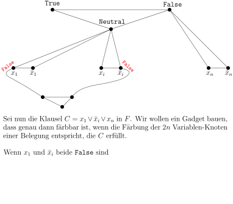
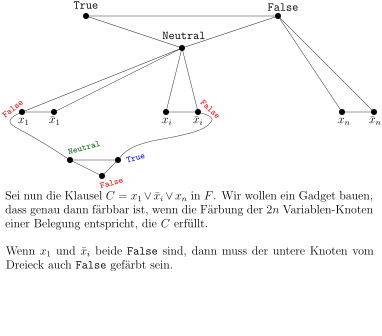
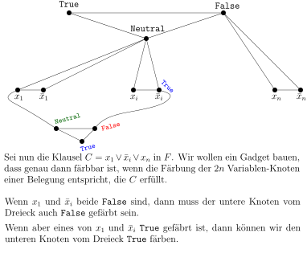
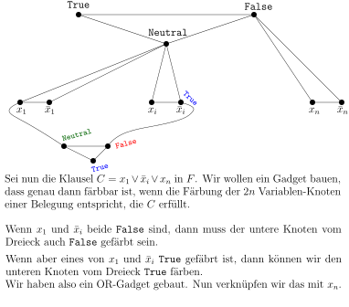
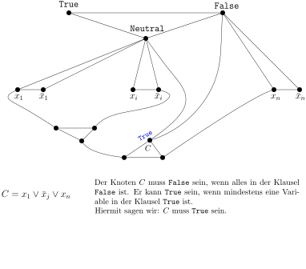
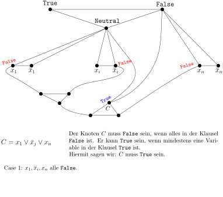
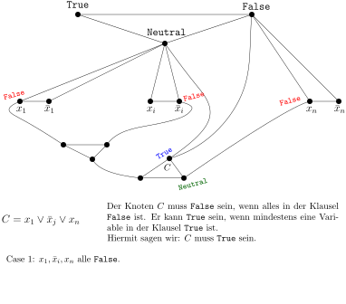
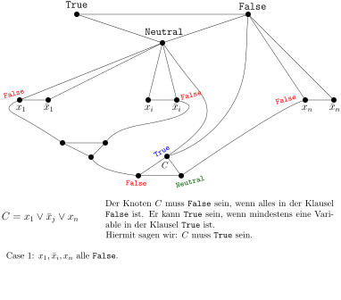
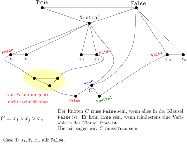
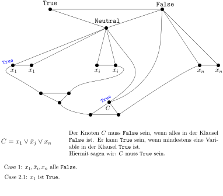
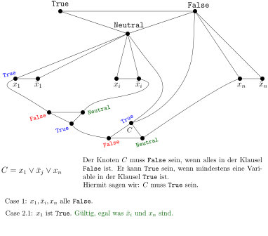
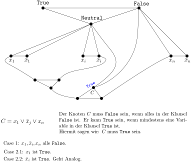
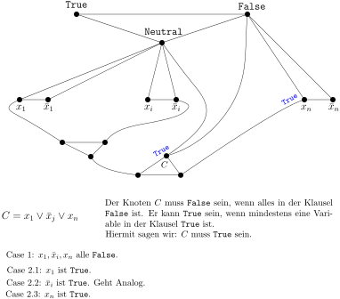
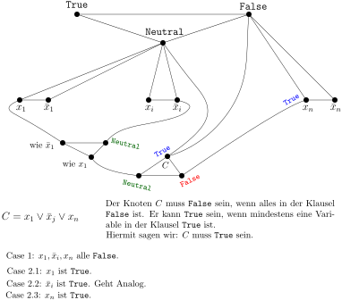
Wir wiederholen die beschriebene Konstruktion für jede Klausel in $F$. Wir erhalten einen Graphen $G$, der genau dann $3$-färbbar ist, wenn $F$ erfüllbar ist. Auch können wir direkt eine gültige $3$-Färbung in eine erfüllende Belegung übersetzen und umgekehrt. Hier ist also der Code:
def is_3CNF_satisfiable(the_3_cnf_formula):
G = cOnvert_to_graph(the_3_cnf_formula)
# G ist der oben konstruierte Graph
return is_3_colorable(G)
A\(\square\)
Wir haben also gezeigt, wie man eine $3$-CNF $F$ in einen Graphen $G$ umwandelt, so dass
gilt. Allerdings ging das nur unter der Annahme, dass $F$ eine $3$-CNF ist. Wie verhält es sich, wenn $F$ eine allgemeine CNF-Formel ist?
Theorem 9.5.3 Es gibt einen effizienten Algorithmus, der als Input eine CNF-Formel $F$ nimmt und eine 3-CNF-Formel $F'$ ausgibt, so dass gilt:
Falls es einen effizienten Algorithmus für $3$-SAT gibt, dann also auch einen für CNF-SAT.
Beweis. Wir starten mit $F_0 := F$ und definieren eine Folge $F_0, F_1, \dots$ von CNF-Formeln. Sei $F_i$ die derzeit letzte erzeugte CNF-Formel. Falls $F_i$ eine Klausel $C$ mit vier oder mehr Literalen enthält, führen wir eine Operation durch, die $C$ durch zwei neue, kleinere Klauseln ersetzt: sei
mit $k \geq 4$. Wir führen eine neue, bisher nicht verwendete Variable $z$ ein und erschaffen die Klauseln
Wir entfernen nun $C$ und fügen $C_1$ und $C_2$ ein und erhalten eine neue CNF-Formel $F_{i+1}$. Wir sehen nun: wenn $\alpha$ die Formel $F_{i+1}$ erfüllt, dann erfüllt sie auch $F_i$; umgekehrt wenn die Belegung $\beta$ die Formel $F_i$ erfüllt, dann erfüllt $\beta$ insbesondere $C$; wir bauen nun eine neue Belegung, die auch $z$ einen Wert zuweist und dann $C_1$ und $C_2$ erfüllt: falls (1) $\beta$ die Klausel $(u_1 \vee u_2)$ erfüllt, dann setzen wir $z$ auf $1$, also $\alpha := \beta \cup [z \mapsto 1]$. Die Belegung $\alpha$ erfüllt nun $C_1$, weil $\beta$ das bereits tut, und $C_2$, weil $\alpha(z)=1$ ist; falls jedoch (2) $\beta$ die Klausel $(u_1 \vee u_2)$ nicht erfüllt, dann muss sie, da sie ja $C$ erfüllt, die Klausel $(u_3 \vee \dots \vee u_k)$ erfüllen und erfüllt somit $C_2$, auch ohne Verwendung von $z$. Wir setzen nun $z$ auf $0$, also $\alpha := \beta \cup [z \mapsto 0]$ und erfüllen sowohl $C_1$ als auch $C_2$. Alle anderen Klauseln sind sowieso erfüllt, weil $\beta$ sie bereits erfüllt. Wir sehen:
Die beiden neuen Klauseln $C_1$ und $C_2$ sind jeweils echt kleiner als $C$. Der Prozess endet irgendwann mit einer Formel $F_t$, in der jede Klausel höchstens drei Literale hat. Dies ist unser $F'$.A\(\square\)
Wir haben nun also eine Kette von Implikationen erschaffen:
Beachten Sie, dass alle Beweise eine ähnliche Form haben: um die Aussage wenn $L_1 \in P$, dann auch $L_2 \in P$ zu zeigen, nehmen wir eine beliebiges $x \in \Sigma_1$ (eine $L_1$-Instanz) und wandeln es um in ein $y \in \Sigma_2$ (eine $L_2$-Instanz), so dass
garantiert ist. Wenn es also einen effizienten Algorithmus
is_in_L2
gibt, dann können wir mit folgendem Code
auch $L_1$ effizient entscheiden:
def is_in_L1(x):
y = convert_from_L1_instance_to_L2_instance(x)
return is_in_L2(y)
Dies ist eine Reduktion, wie wir sie schon in Definition 8.8.4 kennengelernt haben, nun aber mit einer Aussage über die Laufzeit.
Definition 9.5.4 (Polynomialzeitreduktion). Seien $L_1 \subseteq \Sigma_1^*$ und $L_2 \subseteq \Sigma_2^*$ zwei Sprachen. Eine Funktion $f: \Sigma_1^* \rightarrow \Sigma_2^*$ heißt Polynomialzeitreduktion von $L_1$ auf $L_2$ wenn
und $f$ in Zeit $\poly(n)$ berechnet werden kann. Wenn es also ein Polynom $p: \N \rightarrow \N$ und eine Turingmaschine $M$ mit Eingabealphabet $\Sigma_1$ und Ausgabealphabet $\Sigma_2$ gibt, die Laufzeit $p$ hat und $f$ berechnet. Wir schreiben dann $L_1 \leq_p L_2$.
Wenn wir eine Reduktion von $L_1$ auf $L_2$ haben
und einen effizienten Algorithmus für
$L_2$,
dann
können wir wie in
is_in_L1(x)
oben skizziert
$L_1$ effizient entscheiden. Formal:
Beobachtung 9.5.5 Wenn $L_1 \leq_p L_2$ ist und $L_2 \in {\rm P}$, dann auch $L_1 \in {\rm P}$.
Wir haben die folgenden Polynomialzeitreduktionen bereits kennengelernt:
3-Colorability $\leq_p$ CNF-Satisfiability
CNF-Satisfiability $\leq_p$ 3-SAT
3-SAT $\leq_p$ 3-Colorability
Erinnern Sie sich an Independent Set: gegeben ein Graph $G$ und eine Zahl $k$, gibt es eine unabhängige Menge $X \subseteq V$ mit $|X| \geq k$?
Theorem 9.5.6 3-SAT $\leq_p$ Independent Set.
Beweis. Gegeben sei eine 3-CNF-Formel $F$ mit $n$ Variablen und $m$ Klauseln. Wir bauen folgenden Graphen $G$:
und setzen $k:=n+m$. Wir müssen nun folgendes zeigen:
Falls $\alpha$ eine erfüllende Belegung von $F$ ist, dann gibt es folgende unabhängige Menge der Größe $k$:
Für jede Variable $x$ nehmen wir $x$ in $I$ auf, falls $\alpha(x)=1$ ist, ansonsten $\bar{x}$.
Für jede Klausel $C = (u \vee v \vee w)$ gibt es ein erfülltes Literal, sagen wir $u$. Dieser entspricht dem Klauselknoten $u_C$, der mit mit dem Literalknoten $\bar{u}$ verbunden. Da $\alpha(u) = 1$ und $\alpha(\bar{u}) = 0$ ist, ist $u \not \in I$ und wir können $u_C$ in $I$ aufnehmen.
Unsere Menge $I$ enthält $n$ Literalknoten und $m$ Klauselknoten, also insgesamt $k$ Knoten.
Für die Gegenrichtung nehmen wir an, dass $I$ eine unabhängige Menge von $G$ ist und $|I| = n+m$ gilt. Da $I$ pro Literalpaar und pro Klauseldreieck höchstens einen Knoten enthalten kann, enthält $I$ genau einen pro Literalpaar und Klauseldreieck. Wir definieren nun eine Belegung $\alpha$ wie folgt: wenn für eine Variable $x$ der Literalknoten $x$ in $I$ ist, setzen wir $\alpha(x)=1$; falls $\bar{x}$ in $I$ ist, setzen wir $\alpha(x)=0$. Wir behaupten nun, dass $\alpha$ die Formel $F$ erfüllt. Sei $C= (u \vee v \vee w)$ eine beliebige Klausel von $F$. Nach obiger Überlegung enthält $I$ genau einen Klauselknoten von $C$, sagen wir $u_C$. Das heißt somit, dass der Literalknoten $\bar{u}$ nicht in $I$ ist - sonst wäre $I$ ja nicht unabhängig. Somit muss $u \in I$ gelten und $\alpha(u) = 1$, und $\alpha$ erfüllt $C$.A\(\square\)
Übungsaufgabe 9.5.7 Zeigen Sie Independent Set $\leq_p$ SAT. Also: Gegeben einen Graphen $G$ und eine Zahl $k \in \N$, zeigen Sie, wie man die Aussage $G$ hat eine unabhängige Menge der Größe $k$ als aussagenlogische Formel in CNF darstellen kann. Hinweis: Die Aussage "$I$ ist eine unabhängige Menge von $G$ ist leicht darzustellen als CNF-Formeln. Die Aussage "$I$ hat Größe $k$" ist schwieriger. Sie müssen quasi zählen.
Sei $G = (V,E)$ ein Graph. Ein Hamiltonscher Kreis ist ein Kreis, der durch alle Knoten geht. Es muss ein Kreis sein; Kantenzüge, die einen Knoten mehrmals durchlaufen, sind also nicht erlaubt. Hier sehen Sie einen Graphen mit Hamiltonschem Kreis:
Ein Hamiltonscher Pfad ist ein Pfad mit $|V|$ Knoten. Auch hier gilt: kein Knoten darf mehrfach besucht werden. Der untere Graph, der Petersen-Graph, hat keinen Hamiltonschen Kreis, dafür aber einen Hamiltonschen Pfad:
Wir definieren nun die zwei entsprechenden Entscheidungsprobleme:
Problem 9.5.8 (Hamilton Cycle). Gegeben ein Graph $G=(V,E)$, gibt es in $G$ einen Kreis der Länge $|V|$, der also durch alle Knoten geht?
Problem 9.5.9 (Hamilton Path). Gegeben ein Graph $G=(V,E)$, gibt es in $G$ einen Pfad der Länge $|V|-1$, der also alle $|V|$ Knoten enthält?
Theorem 9.5.10 Hamilton Cycle $\leq_p$ Hamilton Path
(Falscher) Beweis.
Tasten wir uns langsam heran.
Wir stellen uns vor, eine Bibliotheksfunktion
has_hamilton_path(G)
zu haben und wollen mithilfe dieser eine neue Funktion
has_hamilton_cycle(G)
schreiben. Sei $u$ ein beliebiger
Knoten. Wir wissen: wenn $G$ einen Hamiltonschen Kreis
hat, dann besucht dieser auch $u$ und im Anschluss
einen Nachbarnknoten
$v$,
also mit
$\{u,v\} \in E$.
Der Graph
$G' := G - \{u,v\}$,
in welchem wir diese
Kante löschen, besitzt somit einen Hamiltonschen Pfad.
Allerdings kann es sein, dass $G'$ sowieso einen Hamiltonschen
Pfad besitzt, der allerdings nicht $u$ und $v$ als
Endknoten hat, so dass er sich mit $\{u,v\}$ nicht
zu einem Hamiltonschen Kreis schließt. Wir müssen irgendwie
die Frage beantworten können: besitzt $G'$ einen Hamiltonschen
Pfad, der $u$ und $v$ als Start- bzw. Endknoten hat?
Dies ist einfach: wir können neue Knoten $s$ und
$t$ und die Kanten $\{s,u\}$ und $\{t,v\}$ einführen.
Da $s$ und $t$ nun Grad $1$ haben, muss ein Hamiltonscher
Pfad, wenn er denn existiert, $u$ und $v$ als Endknoten
haben. Sei also
$G'' := G' + \{s,u\} + \{t,v\}$.
Beobachtung: $G$ hat genau dann einen Hamiltonschen Kreis durch die Kante $\{u,v\}$, wenn $G''$ einen Hamiltonschen Pfad hat.
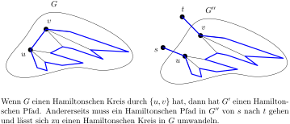
Woher wollen wir allerdings wissen, ob der Kreis in
$G$ (wenn es ihn denn gibt) überhaupt durch
$\{u,v\}$ geht? Vielleicht gibt es ja einen, aber
keinen durch
$\{u,v\}$,
so dass dann
has_hamilton_path(
$G''$)
mit
False
antwortet, obwohl wir gerne ein
True
hätten. Um das zu verhindern, können wir ja
alle
Nachbarn von $u$ durchprobieren. Wenn einer
klappt, dann haben wir unseren Kreis; wenn es überhaupt
einen Kreis gibt, dann klappt es auch mit einem Nachbarn
(in der Tat: sogar mit zweien).
def has_hamilton_cycle(G):
u = ein beliebiger Knoten
for v in neighbors[u]:
H = G - {u,v} + {s,u} + {t,v}
if has_hamilton_path(H):
return True
return False
Falls nun
has_hamilton_path
polynomielle Laufzeit
$O(n^k)$ hat, so hat
has_hamilton_cycle
eine Laufzeit
von
$O(n^{k+1})$,
auch polynomiell.A\(\square\)
Was ist nun an diesem Beweis falsch? Nun, der Begriff
der Reduktion, dem wir uns ja mit der Notation
$\leq_p$ verpflichten, verlangt, dass wir auf Eingabe
$G$
einen
Graphen $G'$ bauen, mit der Eigenschaft,
dass $G$ genau dann einen Hamiltonschen Kreis hat,
wenn $G'$ einen Hamiltonschen Pfad hat. Uns steht
also genau
ein
Aufruf von
has_hamilton_path
zu.
Aber ganz wertlos ist der obige Beweis dennoch nicht,
zeigt er doch, dass, falls
Hamilton Path $\in$ P
ist, dann auch
Hamilton Cycle $\in$ P. Der Fachbegriff für das, was unsere obige Funktion
has_hamilton_cycle
tut, nennt sich
Cook-Reduktion,
nach Stephen Cook, einem der Väter der Klasse NP. Eine
Reduktion, die dem strengen Reduktionsbegriff folgt,
also
, nennt man in Abgrenzung dazu
Karp-Reduktion
nach
Richard Karp, ein weiterer NP-Vater.
Übungsaufgabe 9.5.11 Geben Sie einen "richtigen" Beweis für, also eine Karp-Reduktion.
Übungsaufgabe 9.5.12 Zeigen Sie Hamilton Path $\leq_p$ Hamilton Cycle. Wenn es Ihnen einfacher scheint, geben Sie erst einmal eine Cook-Reduktion.